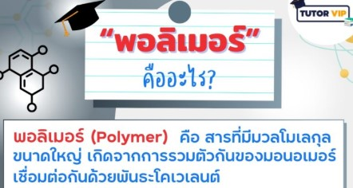

พอลิเมอร์
พอลิเมอร์ มี่กี่ประเภท
1. กรณีแบ่งตามแหล่งกำเนิดของพอลิเมอร์ จะมี 2 ประเภท ได้แก่
1.1 พอลิเมอร์ธรรมชาติ ซึ่งเป็นได้ทั้งสารอินทรีย์และสารอนินทรีย์ เช่น ไกลโคเจน แป้ง ทรายซิลิกา
1.2 พอลิเมอร์สังเคราะห์ เช่น พลาสติก ยางสังเคราะห์
2. กรณีแบ่งตามชนิดของมอนอเมอร์ที่เป็นองค์ประกอบ จะมี 2 ประเภท ได้แก่
2.1 โฮโมพอลิเมอร์ (Homopolymer) เป็นพอลิเมอร์ที่ประกอบด้วยมอนอเมอร์ชนิดเดียวกัน
2.2 โคพอลิเมอร์ (Copolymer) เป็นพอลิเมอร์ที่ประกอบด้วยหน่วยเล็กๆ ของมอนอเมอร์ต่างชนิดกัน เช่น สายโซ่ของโปรตีน เป็นพอลิเมอร์ที่เกิดจากกรดอะมิโนต่างชนิดกันมารวมตัวกัน
3. กรณีแบ่งตามคุณสมบัติหรือการใช้งานของพอลิเมอร์ จะแบ่งได้ 3 ประเภท ได้แก่
3.1 เส้นใย ซึ่งมีลักษณะเป็นเส้นเล็กยาว มีความแข็งแรง และทนต่อแรงดึงตามความยาวของเส้น เช่น ขนสัตว์ ไหม เส้นใยสังเคราะห์ ฝ้าย
3.2 สารยืดหยุ่น เป็นพอลิเมอร์ที่สามารถปรับเปลี่ยนรูปร่างเมื่อยืดดึงและเมื่อปล่อยก็จะกลับคืนสู่สภาพเดิมได้ ทั้งนี้ เนื่องจากแรงยึดระหว่างโมเลกุลไม่แข็งแรงมากนัก เมื่อถูกยืดโมเลกุลก็จะยืดออกและเรียงตัวเป็นระเบียบ แต่เมื่อปล่อยจากการยืดก็จะกลับสู่สภาพที่เป็นสายโซ่ที่พันขดกันเป็นก้อนเหมือนเดิม เช่น ถุงมือยาง ยางรถยนต์
3.3 พลาสติก เป็นสารประกอบอนินทรีย์ที่สังเคราะห์ขึ้นใช้แทนวัสดุธรรมชาติ บางชนิดเมื่อเย็นก็แข็งตัว เมื่อถูกความร้อนก็อ่อนตัว บางชนิดแข็งตัวถาวร เช่น ไนลอน เสื้อผ้า ฟิล์ม ภาชนะ